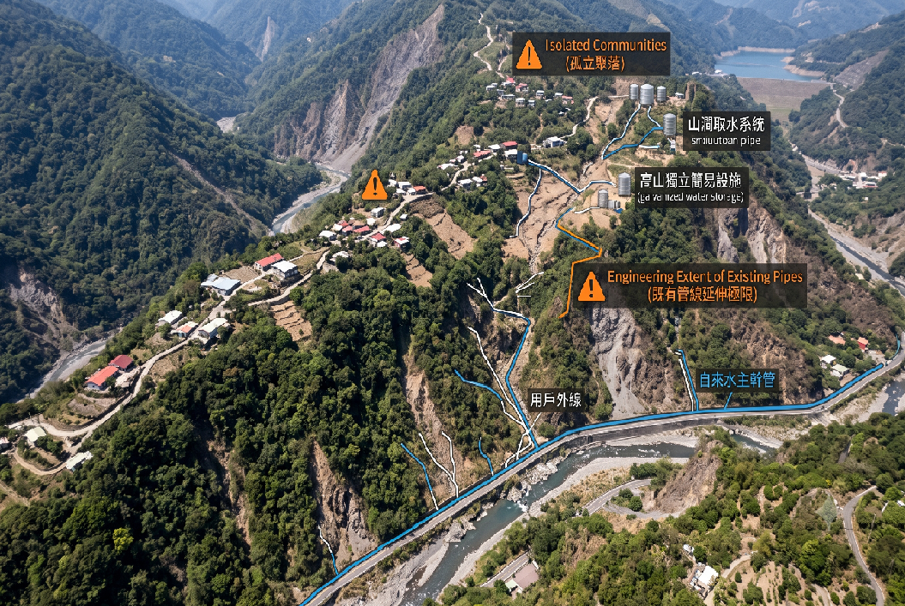
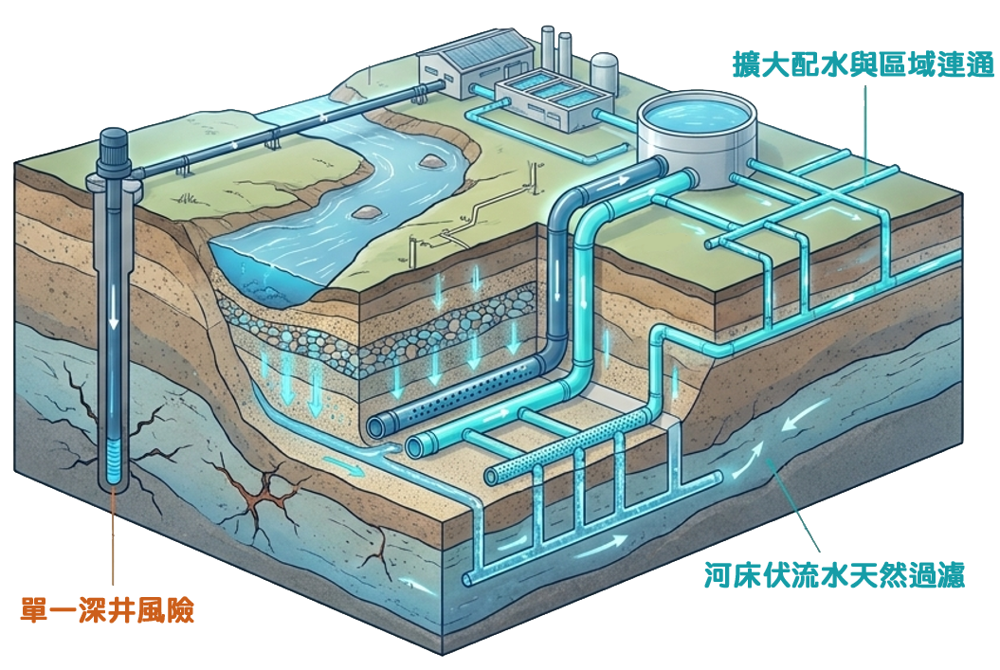

問題一：民眾接水意願低落與用戶外線施工費用負擔
傳統觀念與初期經濟負擔評估
問題分析
屏東農村聚落早期普遍存有「地下水取之不盡、且不需繳納水費」之傳統觀念。當自來水延管工程到達聚落時，居民仍常因主觀裝設意願不高而拒絕接水。
用戶外線施工費用之初期經濟負擔
自來水「用戶外線施工」意即從道路主幹管連接至家戶水錶之管線工程，其施工費用往往包含大筆的路權申請費、道路刨鋪刨除修復費以及實質工程費，動輒數萬元。這筆初期經濟負擔對於中低收入戶或老齡化嚴重的偏遠社區而言，是一筆巨大的卡關障礙。

提升民眾接管意願之對策
🏛️ 政策雙管齊下：經費補助與管網鋪設
配合中央「無自來水地區供水改善計畫」，由水利署、地方政府與台灣自來水公司共同合作，於屏東縣鋪設多條清水幹管，實質降低民眾接管負擔。
💡 策略成效： 透過公權力大幅降低家戶接水之初期門檻，化被動為主動，並搭配地方宣導，成功翻轉民眾長期之用水習慣，進而快速拉升實質接水率。
⚠️ 當前挑戰： 部分民眾對政策內容與申請方式仍不甚瞭解，且申辦程序較為繁瑣，致使接水率仍有提升空間。
問題二：偏遠、高地或弱勢聚落供水困難
現況與極端氣候風險評估
問題分析
屏東部分原住民山地鄉、偏遠散村或地勢較高之聚落，因地理位置極度孤立、戶數稀少且分散。若要將既有的自來水主幹管跨越山巒或溪流延伸至該區域，每戶平均分攤之工程成本往往高達數十萬甚至上百萬元。
基礎建設死角與生存危機
這導致這些偏遠或弱勢區域成為基礎建設遺漏的死角，遠遠超出常規延管工程所設定之評估補助上限（每戶補助標準）。在極端旱災來臨時，其自行架設之山澗取水系統常率先斷水，面臨嚴峻的民生生存危機。

供水系統與自來水工程架構示意圖
問題三：屏北及屏中地區供水不穩定與環境調適風險
單一水源過度依賴與氣候風險評估
問題分析
屏北及屏中地區過度依賴單一深井水源。隨著自來水普及率的穩定提高，整體用水需求量隨之增長，導致現有的單一水源供應壓力日益沉重，系統容錯空間逐步被壓縮。
氣候衝擊與環境調適風險
在極端氣候常態化（如遭遇長期乾旱）的威脅下，現有供水系統的環境調適風險顯著上升，極易面臨供水不穩定的窘境。為了有效支撐未來的民生與產業需求，亟需開發多元新水源以強化防禦韌性。

屏東平原自來水供水系統架構圖
建構 90% 普及率的韌性水網
面對不可逆的氣候變遷，未來核心策略：開發天然過濾的伏流水、建置鄉鎮雙向區域聯通管網，並導入智慧水位監測，確保水資源永續。